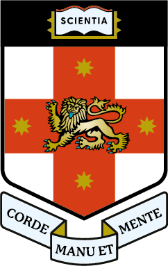
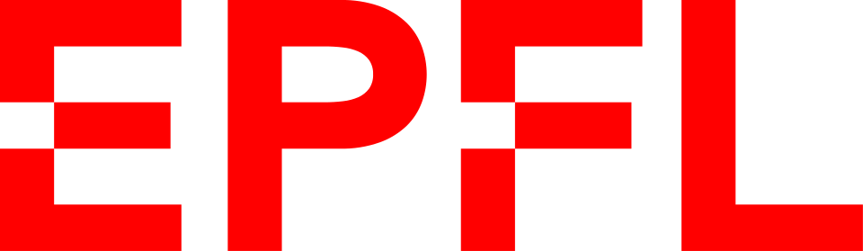
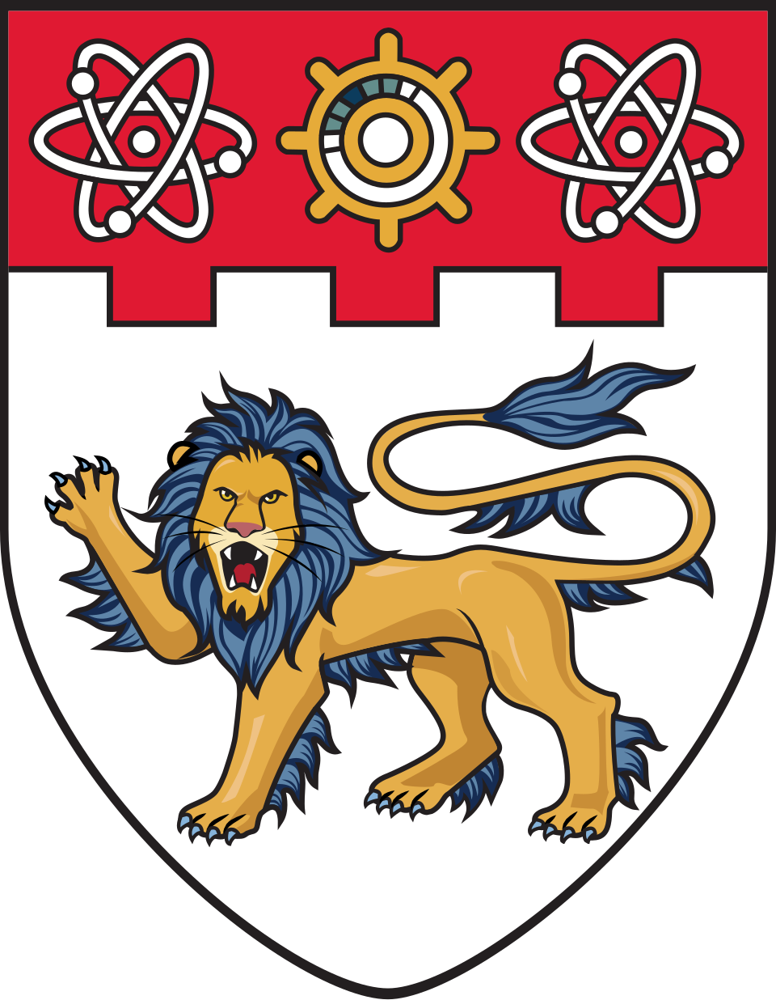
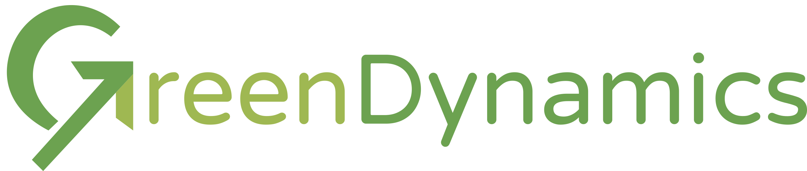

AI Scientists' Last Exam
Nature as the Verifier
AISLE / 参与机构
全球科研网络
全球科研网络选择地点，探索实验

06个国家10个机构04个实验视频
4,079真实实验
02实验室
07已评测模型
04任务类别
AISLE 包含真实实验与模拟任务。
Leaderboard
完整排行榜AISLE · 5 个模型
#模型综合分各类别得分贡献
0255075100
类别等权。点击上方类别切换分数，点击模型查看详情。
分类得分明细
分类得分
| 排名 | 模型 | 综合 / 100 | 优化 | 安全 | 鲁棒性 | 多模态 |
|---|---|---|---|---|---|---|
| 01 | OpenAI | 42.02 | 25.95 | 33.33 | 74.92 | 33.86 |
| 02 | Qwen | 28.36 | 26.13 | 4.44 | 65.16 | 17.71 |
| 03 | Anthropic | 24.25 | 10.27 | 8.89 | 52.58 | 25.27 |
| 04 | 19.54 | 28.47 | 0.00 | 29.28 | 20.42 | |
| 05 | Moonshot AI | 16.09 | 7.00 | 0.00 | 34.73 | 22.62 |
综合分为四类能力的均值。
AISLE
任务分项
类别排名
得分 / 100- 1Gemini 3.1 Pro Preview28.47
- 2Qwen 3.6 Plus26.13
- 3GPT 5.525.95
- 4GLM 5.123.80
- 5DeepSeek V4 Pro13.83
- 6Claude Sonnet 4.610.27
- 7Kimi K2.67.00
得分按当前类别汇总。N/A = 未评测。
类别排名
得分 / 100- 1GPT 5.533.33
- 2Claude Sonnet 4.68.89
- 3GLM 5.14.44
- 3Qwen 3.6 Plus4.44
- 5Gemini 3.1 Pro Preview0.00
- 5DeepSeek V4 Pro0.00
- 5Kimi K2.60.00
得分按当前类别汇总。N/A = 未评测。
真实物理实验
漂移恢复与树脂转移
依据测量反馈补偿移液误差。
- 任务
- 隐藏移液漂移；三种黏度的树脂转移
- 决策
- 根据反馈调整配方或吸液体积
- 目标
- 漂移后恢复；实际转移体积 500 ± 10 μL
- 证据
- 恢复、全轮次合格率与重复一致性
类别排名
得分 / 100- 1GPT 5.574.92
- 2GLM 5.168.57
- 3Qwen 3.6 Plus65.16
- 4Claude Sonnet 4.652.58
- 5DeepSeek V4 Pro37.32
- 6Kimi K2.634.73
- 7Gemini 3.1 Pro Preview29.28
得分按当前类别汇总。N/A = 未评测。
湿实验测量 + 实测数据查询
光谱匹配与 pKa 推断
利用实测光谱调整配方并估计 pKa。
- 任务
- 光谱匹配；主动 pKa 推断
- 反馈
- 光谱图像或对实测光谱库的查询
- 范围
- 五个参与评测的图像输入模型
- 证据
- 光谱误差、参数推断精度与查询效率
类别排名
得分 / 100- 1GPT 5.533.86
- 2Claude Sonnet 4.625.27
- 3Kimi K2.622.62
- 4Gemini 3.1 Pro Preview20.42
- 5Qwen 3.6 Plus17.71
- —GLM 5.1N/A
- —DeepSeek V4 ProN/A
得分按当前类别汇总。N/A = 未评测。
参与机构
学术机构
- 苏州国家实验室
- 中国科学技术大学
- BEARS
- 新南威尔士大学

- 洛桑联邦理工学院

- 中南大学
- 深圳大学
- 南洋理工大学

- 加州大学伯克利分校
- 多伦多大学
工业界
- GreenDynamics
